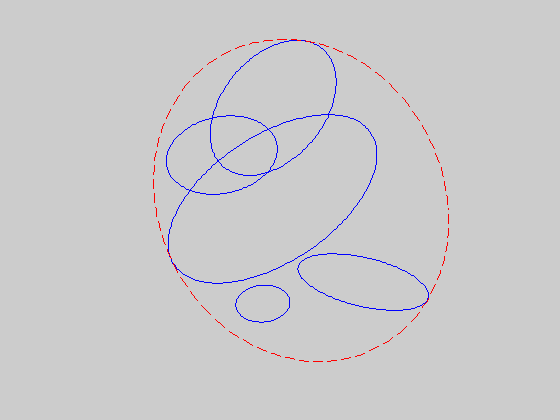

Minimum volume ellipsoid covering union of ellipsoids
As = {}; bs = {}; cs = {};
As{1} = [ 0.1355 0.1148; 0.1148 0.4398];
As{2} = [ 0.6064 -0.1022; -0.1022 0.7344];
As{3} = [ 0.7127 -0.0559; -0.0559 0.9253];
As{4} = [ 0.2706 -0.1379; -0.1379 0.2515];
As{5} = [ 0.4008 -0.1112; -0.1112 0.2107];
bs{1} = [ -0.2042 0.0264]';
bs{2} = [ 0.8259 -2.1188]';
bs{3} = [ -0.0256 1.0591]';
bs{4} = [ 0.1827 -0.3844]';
bs{5} = [ 0.3823 -0.8253]';
cs{1} = 0.2351;
cs{2} = 5.8250;
cs{3} = 0.9968;
cs{4} = -0.2981;
cs{5} = 2.6735;
n = 2;
m = size(bs,2);
cvx_begin sdp
variable Asqr(n,n) symmetric
variable btilde(n)
variable t(m)
maximize( det_rootn( Asqr ) )
subject to
t >= 0;
for i = 1:m
[ -(Asqr - t(i)*As{i}), -(btilde - t(i)*bs{i}), zeros(n,n);
-(btilde - t(i)*bs{i})', -(- 1 - t(i)*cs{i}), -btilde';
zeros(n,n), -btilde, Asqr] >= 0;
end
cvx_end
A = sqrtm(Asqr);
b = A\btilde;
noangles = 200;
angles = linspace( 0, 2 * pi, noangles );
clf
for i=1:m
Ai = sqrtm(As{i}); bi = Ai\bs{i};
alpha = bs{i}'*inv(As{i})*bs{i} - cs{i};
ellipse = Ai \ [ sqrt(alpha)*cos(angles)-bi(1) ; sqrt(alpha)*sin(angles)-bi(2) ];
plot( ellipse(1,:), ellipse(2,:), 'b-' );
hold on
end
ellipse = A \ [ cos(angles) - b(1) ; sin(angles) - b(2) ];
plot( ellipse(1,:), ellipse(2,:), 'r--' );
axis square
axis off
hold off
Calling SDPT3: 94 variables, 15 equality constraints
Note: for improved efficiency, SDPT3 is solving the dual problem.
------------------------------------------------------------
num. of constraints = 15
dim. of sdp var = 31, num. of sdp blk = 7
dim. of linear var = 6
*******************************************************************
SDPT3: Infeasible path-following algorithms
*******************************************************************
version predcorr gam expon scale_data
NT 1 0.000 1 0
it pstep dstep pinfeas dinfeas gap mean(obj) cputime
-------------------------------------------------------------------
0|0.000|0.000|3.9e+01|7.3e+00|1.2e+03| 2.500000e+01| 0:0:00| chol 1 1
1|0.751|0.748|9.7e+00|1.9e+00|3.8e+02| 1.145708e+01| 0:0:00| chol 1 1
2|0.840|0.819|1.6e+00|3.5e-01|1.0e+02| 1.286943e+01| 0:0:00| chol 1 1
3|0.917|0.883|1.3e-01|4.2e-02|2.1e+01| 6.768493e+00| 0:0:00| chol 1 1
4|0.905|1.000|1.2e-02|1.0e-04|4.7e+00| 2.232114e+00| 0:0:00| chol 1 1
5|0.883|0.999|1.4e-03|2.5e-03|6.3e-01| 3.185462e-01| 0:0:00| chol 1 1
6|1.000|1.000|4.1e-09|2.9e-04|1.8e-01| 1.391749e-01| 0:0:00| chol 1 1
7|0.920|0.993|2.0e-09|2.2e-06|2.0e-02| 8.570651e-02| 0:0:00| chol 1 1
8|1.000|1.000|4.7e-09|1.0e-08|6.0e-03| 8.060240e-02| 0:0:00| chol 1 1
9|0.976|0.979|5.0e-10|1.8e-09|1.4e-04| 7.873273e-02| 0:0:00| chol 1 1
10|0.980|0.986|1.0e-11|2.2e-10|2.8e-06| 7.868255e-02| 0:0:00| chol 1 1
11|1.000|1.000|7.4e-10|2.0e-12|2.1e-07| 7.868153e-02| 0:0:00| chol 1 1
12|1.000|1.000|1.7e-10|3.1e-12|1.3e-08| 7.868147e-02| 0:0:00|
sqlp stop: max(relative gap, infeasibilities) < 1.49e-08
-------------------------------------------------------------------
number of iterations = 12
primal objective value = 7.86814749e-02
dual objective value = 7.86814620e-02
gap := trace(XZ) = 1.29e-08
relative gap = 1.11e-08
actual relative gap = 1.11e-08
rel. primal infeas = 1.67e-10
rel. dual infeas = 3.06e-12
norm(X), norm(y), norm(Z) = 2.4e+00, 3.0e+00, 8.2e+00
norm(A), norm(b), norm(C) = 1.4e+01, 2.4e+00, 3.2e+00
Total CPU time (secs) = 0.2
CPU time per iteration = 0.0
termination code = 0
DIMACS: 2.0e-10 0.0e+00 5.0e-12 0.0e+00 1.1e-08 1.1e-08
-------------------------------------------------------------------
------------------------------------------------------------
Status: Solved
Optimal value (cvx_optval): +0.0786815
